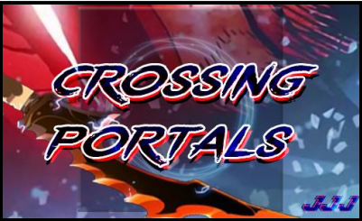
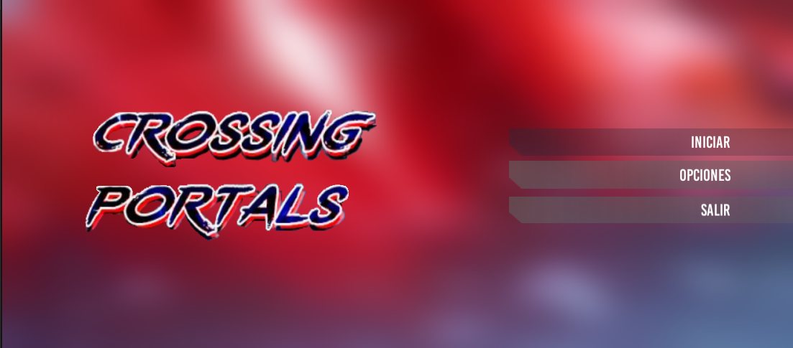
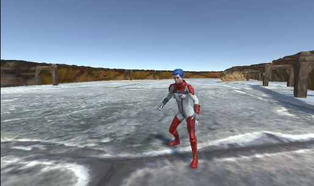

Como empezo todo...
Programar no es solo escribir código al azar, es darle un propósito a cada carácter que se añade al entorno de programación. Con el nacimiento de la programación orientada a objetos (POO) este propósito se ve aun más genial, se puede manejar el comportamiento de cada clase de una forma tan extraordinaria que con unas cuantas líneas podemos manipular todo un mundo desde la comodidad de nuestra casa, y qué mejor manera de hacer este proceso en Unity, una de las mejores plataformas de diseños de videojuegos. Todo comenzó con un hexaedro regular, un “objeto” tan simple, pero con infinitas posibilidades. Con un simple cubo podemos crear personas, casas, montañas… universos, claramente la mejor manera de darle forma a aquel cubito es en un programa que se enfoque más en la edición, uno de estos podría ser Blender, pero el toque que le da vida a este cubo, que le da sentido a su existencia es el código, y en este caso el lenguaje C#, que es el lenguaje de programación más adecuado para trabajar en Unity.
Pensando en la historia...
Después de una lluvia de ideas optamos por crear un Juego 3D en el que un personaje va cazando monstruos a través de mazmorras a medida que sube de nivel y gana recompensas. La idea se acercaba un poco a un comic asiático(manhwa) llamado Solo Leveling, el reto era tratar de copiar todas las habilidades del personaje del manhwa y llevarlo al mundo de los videojuegos, aunque luego la idea fue cambiando. El plan inicial era poco a poco transformar el cubito en nuestro personaje principal humanoide, pero el tiempo es el enemigo a la hora de programar, y desistimos de la idea de crear todo desde cero, fue en ese momento que conocimos a Mixamo, esta es una página web en la que se puede descargar sin ningún costo muchos personajes y con ellos muchas animaciones, así que ahí tomamos otro rumbo en el diseño de nuestro Juego. Unas semanas antes de comenzar el proyecto no teníamos la más remota idea de hacer un juego, por eso el reto fue hacer una gran tarea de investigación en sitios web, blogs, Youtube, hasta que poco a poco fuimos haciendo una recolección de conocimiento y sin darnos cuenta nuestro recién nacido personaje estaba dando sus primeros pasos.
Comenzando con el Proyecto...
Una de las primeras cosas que pensamos hacer fue el logo del juego, algo que es muy importate, y que nos ayudaría en la personalidad del juego, los colores y la estética del mismo
Para explicar mejor como se comenzó, aquí una muestra del código inicial que permitía mover al personaje hacia adelante, atrás y a los lados.


Debido a que somos tres los creadores, nos repartimos el trabajo, mientras Juan Carlos se dedicaba a añadir más habilidades al personaje, como caminar agachado, saltar, dar puños…etc, Juan David diseñaba el menú principal y el primer escenario; Julian se enfocaba en la construcción de la primera mazmorra, y tras un mes de trabajo el primer Sprint, la primera entrega estaba lista.
Aquí unas imagenes de los primeros avances en el juego:
Menú principal del juego
Personaje principal
Escenario uno

Mazmorra o nivel principal

Durante el proceso de creacion, fue necesario investigar exhaustivamente sobre distintos ambitos de la programacion y del diseño de videojuegos, la tarea mas ardua fue aprender a usar Unity, este motor de creación de videojuegos es bastante completo, pero un poco complicado de entender al comienzo, aún así, nos apañamos y pudimos entenderlo. Luego de comprender el funcionamiento de Unity, empezamos a programar los movimientos del personaje, tarea de la cual se encargo Juan Carlos, comenzamos con la creacion de los niveles, el bosque y la mazmorra, tarea la cual se encargaron Júlian y Juan David; logramos aprender distintas temáticas del diseño de niveles, de animacion de personajes en 3D, nuevas funcionalidades en c# y demás cuestiones de todo el ambito del GameDev.
En la mitad del proceso...
Para la segunda entrega, teniamos planeado la creacion de los enemigos, el jefe final y el sistema de combate del juego, de esta parte se encargarían Juan David y Júlian; Juan Carlos seguía puliendo y añadiendo nuevas mecanicas al personaje principal